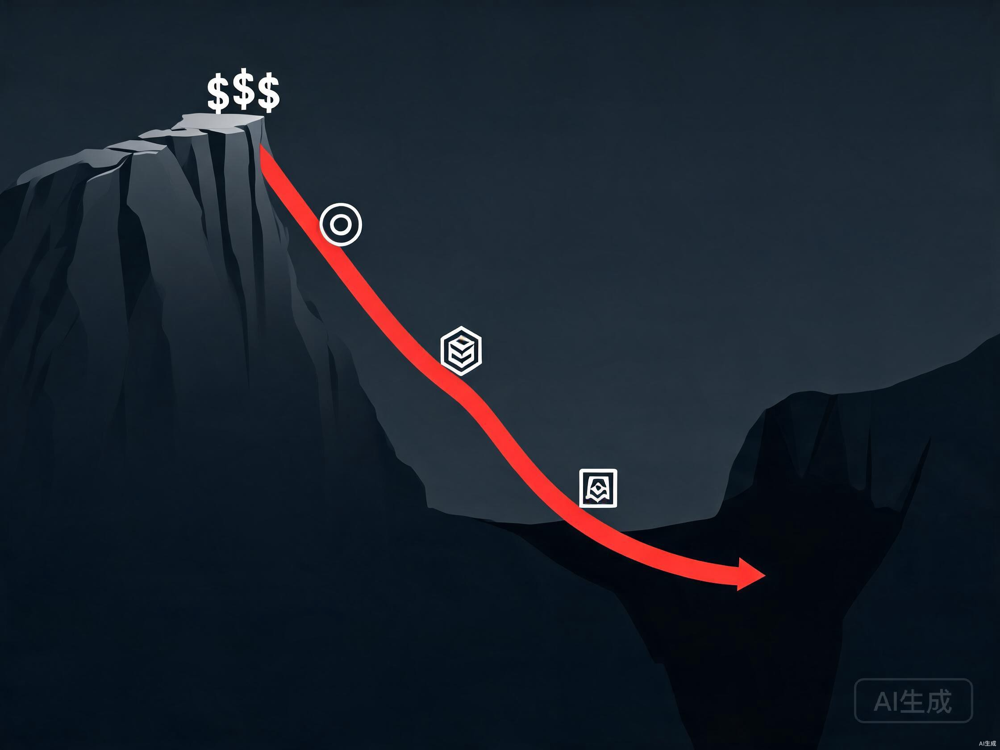

8万亿Token。
8月3日，DeepSeek V4-Flash单日处理8万亿Token的消息炸了整个AI圈。5600万本《三体》的文字量，24小时吞下去又吐出来。OpenRouter全球调用量前五，清一色中国模型。OpenAI高管跑到评论区打广告，被开发者一句话怼回去，"我们要DeepSeek的价格。"
所有自媒体都在喊"DeepSeek赢了""中国AI碾压"。
说真的，我看完这些标题心里咯噔了一下。不是为OpenAI紧张，是为看这篇文章的你紧张。
因为8万亿这个数字，不是某家公司的喜报。它是整个AI行业游戏规则改写的信号弹。模型正在变成水电煤，而水电煤时代，赚钱的逻辑跟今天完全不一样。
同一天，Qwen3.8-Max发布，2.4万亿参数，95B激活，宣布下周开源Max级权重。一个2.4T参数的顶级模型白送。
一周之内，从DeepSeek到OpenAI到通义千问，所有人都在把价格往地板上砸。
先说清楚一件事。
8万亿Token里5万亿是白送的。剩下3万亿付费的，DeepSeek缓存命中率98%，命中时只按标价2%计费。第三方实测，DeepSeek V4-Flash单次任务平均成本3美分。海外同类高端模型3.5美元。差了一百倍。

一百倍是什么概念？当价格打到对手的百分之一，你不再是竞争对手，你是在重新定义这个商品的性质。
石油、钢铁、水泥、电力。这些大宗商品有个共同特点，谁家的都差不多，买谁主要看价格。你不会在乎你家插座里的电是哪个电厂发的。
AI模型正在变成这个样子。DeepSeek V4-Flash拿50分，GPT-5.6 Luna拿51分，差1分。但DeepSeek便宜了60%。任何一个理性的开发者都会选便宜的。因为那1分的差距，不值得多花60%的钱。
智能指数50分
单次任务3美分
缓存折扣98%
284B总参/13B激活
智能指数51分
降价后仍贵60%
缓存折扣90%（行业均值）
OpenAI闭源架构
当性能差距缩小到可以忽略，价格就成了唯一变量。当价格成了唯一变量，模型就从"产品"变成了"基础设施"。
模型变成水电煤，做模型的就是发电厂，用模型的才是开工厂的人。
这是整篇文章最关键的部分。如果你只读一段，读这段。
模型变成基础设施之后，价值链会重新分配。我把它分成三层。
第一层，模型层。利润归零。DeepSeek把推理成本打到3美分，Qwen3.8-Max把2.4T参数模型白送。当最强的模型免费，中端模型的价格只会更低。做模型的公司，要么像DeepSeek一样靠极致工程压成本走量，要么像OpenAI一样往高端走做差异化。中间地带是最危险的，既没有成本优势又没有技术壁垒的模型公司，接下来会非常难受。VC的钱已经开始从模型层撤退了。
第二层，中间层。这是新冒出来的机会。模型便宜了，调用多了，谁来做路由、缓存、监控、计费？OpenRouter就是这个层的代表，它不自己做模型，它做模型的"水管"。水管生意的特点是，水流越大你越值钱，不管谁家的水。API网关、模型路由、推理优化、Agent编排框架，这些中间件会变成新的基础设施。今天这个层还很分散，但两三年内会跑出几个巨头。
第三层，应用层。这是最大的金矿。当模型免费了，值钱的不是模型本身，是用模型解决具体问题的能力。微软Copilot付费席位突破3000万，北美四大云厂二季度资本开支7325亿美元。这笔钱不是在买模型，是在买模型之上的应用和工作流。
我有时候觉得，AI行业正在重演通信行业2001年的事。光纤产能过剩，带宽价格崩塌，铺设光缆的公司大量破产。但正是廉价带宽催生了Google、Amazon、Netflix。光纤铺设者的尸骨上，长出了整个互联网应用层。
AI模型就是新时代的光纤。光纤不值钱，跑在光纤上的东西才值钱。
说了这么多宏观的，聊聊跟你有关的。
模型变成水电煤，对不同的人意味着完全不同的命运。我分成四波人来讲。
你可能是做了八年供应链的运营，可能是干了十年的律师助理，可能是三甲医院的影像科医生。你不需要懂Transformer的注意力机制，你需要懂的是你那个行业里哪些环节可以被AI优化。模型免费了，以前做不起来的AI方案现在成本几乎为零。你攒了十年的行业Know-how，突然变成了最稀缺的东西。因为模型人人都能用，但知道用它解决什么问题的人很少。这个窗口期大概两到三年。
模型层利润归零，但Agent编排、工作流自动化、多模型协作这些中间层正在爆发。会搭Agent pipeline的人，会做RAG系统的人，会调MoE推理优化的人，接下来两年的行情只会涨。微软、字节、阿里都在疯狂招这个方向的人。关键是你的技能不能只停留在"调API"，得往架构和系统层走。
这是最难听但最该说的话。如果你现在的核心竞争力是"我会写很好的prompt"，你需要警醒了。模型变聪明了，prompt门槛在降低。DeepSeek V4-Flash在Agent任务上的表现已经超过了很多需要复杂prompt工程的场景。当模型自己就能理解意图、自己就能规划步骤，prompt工程师的价值会快速缩水。不是说没用，而是不再是稀缺技能。你得往上游走，懂业务、懂系统、懂架构。
如果你在一家中小型模型公司工作，既没有DeepSeek的成本优势，又没有OpenAI的品牌溢价，你得认真想想这家公司三年后还在不在。模型层的终局是两三家巨头加一群开源模型，中间地带会被挤干。这不是危言耸听，这是每个commodity化行业的必然路径。钢铁行业曾经有上千家钢厂，最后活下来的不到二十家。
判断完了，说说行动。不管你在哪一波，以下五件事现在就该开始做。
第一，停止追逐模型参数，开始积累行业场景。模型会越来越便宜越来越好，你追不上也没必要追。你应该追的是，你所在行业里有哪些具体问题，可以用现在的模型解决。列一张清单，从最痛的问题开始，一个一个试。模型3美分一次调用，试错成本几乎为零。
第二，学Agent架构，不只学prompt。prompt是入门技能，Agent架构才是下一个阶段的核心能力。怎么让多个模型协作，怎么管理工作流状态，怎么做工具调用和错误恢复。这些东西今天还不成熟，但两三年后会是标配。提前学的人就是第一批受益者。
第三，找一个垂直领域扎进去。通用AI工具人人都能做，但垂直领域的AI方案有壁垒。法律AI、医疗AI、金融AI、教育AI，每个领域都需要既懂AI又懂行业的人。你不需要两个都精通，但你需要能在两个世界之间翻译。这种翻译能力，就是未来五年最值钱的技能。
第四，关注中间层创业机会。如果你有技术背景，别去卷模型层了。模型路由、推理优化、Agent平台、AI可观测性，这些中间件赛道还在早期，天花板很高。OpenRouter证明了不自己做模型也能成为基础设施。这个方向的机会窗口大概三到五年。
第五，建立个人AI工作流。不是用ChatGPT聊天，是把AI嵌入你每天的工作流程。用DeepSeek V4-Flash做代码审查，用Claude做文档分析，用Agent自动化重复任务。你自己先变成"用模型的人"，才能真正理解这个时代的玩法。最好的学习不是读文章，是用起来。
| 事件 | 时间 | 对你的信号 |
|---|---|---|
| DeepSeek V4-Flash正式版 | 7月31日 | 推理成本逼近零，试错门槛消失 |
| OpenAI Luna降价80% | 7月31日 | 定价权丢失，模型不再是溢价产品 |
| DeepSeek单日8万亿Token | 8月3日 | 5万亿免费，用户习惯正在被培养 |
| Qwen3.8-Max开源Max权重 | 8月3日 | 顶级模型走向免费，护城河不在模型 |
| 微软Copilot突破3000万席位 | Q2 | 应用层已经开始变现，钱在往这跑 |
聊聊预判，也可能我错了。
模型层会继续杀价。DeepSeek的98%缓存折扣已经把地板捅穿了，其他模型要么跟，要么出局。Qwen3.8-Max开源2.4T参数权重，等于告诉所有人，连最强模型都在走向免费。这场价格战没有底部，因为边际成本在逼近零。
中间层会跑出新巨头。今天你听过的API网关、Agent框架都还是小公司。但两三年后，这个层会出现估值百亿级的公司。因为模型越多越便宜，路由和编排的需求就越大。水管生意不怕水多。
应用层会爆发。当模型成本从3.5美元降到3美分，以前做不起来的AI方案全部可行了。批量法律文书审查、千人千面教育辅导、全自动化财务分析，这些以前因为调用成本太高只能做Demo的东西，现在都能跑了。未来两年会冒出一批"AI原生"的应用公司，它们不自己做模型，但它们最懂怎么用模型解决问题。
OpenAI高管Tibo在评论区被怼的那句话，"我们要DeepSeek的价格"，我觉得会被写进AI商业史。不是因为这句话多好笑，而是因为它标志着一个转折点。从那天起，模型的定价权不再属于做模型的人，而属于用模型的人。
用模型的人，才是水电煤时代的新地主。
8万亿Token。5万亿白送。3万亿付费，每次调用3美分。
这个数字不是DeepSeek的喜报，也不是中国AI的胜利宣言。它是一张通知书，通知你AI行业的游戏规则变了。
做模型的人利润在消失。调模型的人技能在贬值。但用模型解决具体问题的人，你们的时代刚刚开始。
问题是，你是哪一波人？
谢谢你看我的文章。
数据来源：OpenCode官方发文（8月3日）/ OpenRouter周报 / 第一财经 / 新浪财经 / 腾讯新闻 / Qwen官方博客（8月3日）/ Artificial Analysis / 微软FY2026 Q4财报